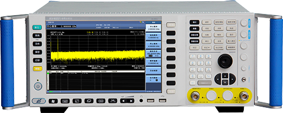
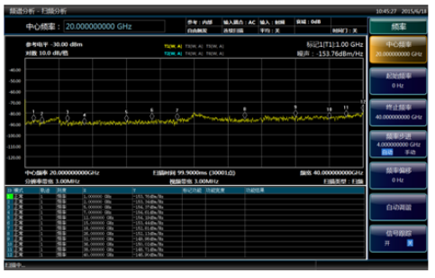

- 首页 >
- 产品中心 >
- 微波/毫米波测量仪器 >
- 信号与频谱分析仪 >
- AV4051A/B/C/D/E/F/G/H信号分析仪
AV4051A/B/C/D/E/F/G/H信号分析仪
AV4051A/B/C/D/E/F/G/H Signal analyzer

适用于复杂信号分析的信号/频谱分析仪
AV4051系列信号/频谱分析仪具有优良的测试动态范围、相位噪声、幅度精度和测试速度，具备高灵敏度频谱分析、符合标准的功率测量组件、IQ分析、瞬态分析、脉冲参数分析、音频分析、模拟调制测量、相位噪声测试等多种测试功能，可为您提供可靠的高性能测试服务。AV4051具有良好的扩展能力，可通过灵活配置选件进一步提升测试性能，也可通过各种数字和模拟信号输出接口构建测试系统或进行二次开发。可应用于航空、航天、雷达探测、通信、电子对抗、导航等领域的信号及设备测试。
功能特点
- 宽频率覆盖范围
- 最大200MHz分析带宽
- 优良的测试接收性能
- 全面的频谱分析能
- 瞬态分析及信号回放
- 丰富的功能选件
- 宽频率覆盖范围
- 最宽至50GHz的同轴频率覆盖范围
- 8种可选的频段配置，具备更好的经济性
- 可配置对应主机频段的宽频带前置放大器
- 具有到325GHz的外部频率扩展能力（外部频率扩展选件）
- 最大200MHz分析带宽
- 提供10MHz（标配）、40MHz、200MHz等3种分析带宽配置方案
- 带宽可灵活选择，从10Hz至200MHz共40余档
- 根据带宽选择，无缝捕获时间可从1秒直至数小时
- 优良的测试接收性能
- 1GHz测量灵敏度-153dBm/Hz，配置前放后典型值为-167dBm/Hz
- 50GHz测量灵敏度-133dBm/Hz，配置前放后典型值为-151dBm/Hz
- 全数字中频设计，优异的刻度保真度和中频误差

收起
典型应用
- ● 电子系统性能综合评估：作为多用途多功能的通用信号及频谱分析仪表，AV4051可广泛应用于雷达、通信等电子系统综合性能评估中，为宽带信号的测试提供高灵敏度、大动态范围、高精度、高效率的解决方案。
- ● 发射机和接收机测试和诊断：应用AV4051提供的频谱分析、谱功率测试、瞬态分析、相噪测试等丰富的功能，为发射机和接收机测试提供全面的诊断服务。
- ● 直接用于复杂测试诊断系统的集成，为系统提供信号输出、数据输出和结果分析。
展开